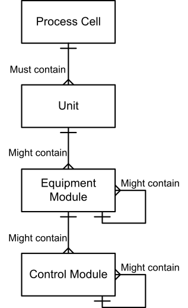

The design process involves breaking down high-level function blocks into nested or composite blocks to add greater details to the application by creating hierarchical structure dependency.
A sub-system is a functional aggregation of plant elements organized to execute a specific purpose through one or more functional behaviors. For example, a high-level Process Cell CAT object could be further broken down into function blocks for different control strategies (e.g. ISA88 Unit model). Moreover, each of these lower-level Unit CAT objects can also contain a sub-system, thereby establishing a hierarchy of control in accordance with the system's architecture.
Let's explain the Component-Based Programming (CBP) hierarchy model using an example of the ISA88 physical model.
As detailed in the ISA88 Overview topic, physical model of the ISA88 standard provides a structured framework for representing the physical elements and interactions within batch manufacturing processes. It focuses on organizing the equipment, control components, and their relationships in a standardized manner.
That means that sub-system hierarchy can be composed of the following layers:
Process Cell
Unit
Equipment module
Control Module
|
 |
When applied to EcoStruxure Automation Expert, each of these levels is implemented through a sub-system (corresponding CAT). Additionally, the “contain” relationship of the standard corresponds to the “Parent-Child” relationship used throughout the guidelines.
In ISA88, Control Modules often correspond to instrumentation or to the aggregation of instruments to represent organic functionalities. Thus, in IEC61499 standard, the control modules either correspond to instances of typicals (motors, valves, agitators, etc.) or to field signals (DI / DO / AI / AO) directly managed by the sub-system.
To help understand the sub-system concept, let’s add the concept of “Parent-Child” in this context. This classification effectively highlights the dependencies that exist between the components.
In this framework, the child represents an independent component that serves as a foundational element of the parent node. The child node encapsulates a specific segment of the parent’s logic, thereby forming a standalone entity that is managed by the parent through clear and structured control actions. As an example, let’s consider the hierarchical structure in which Process Cell serves as the parent entity to Unit. In turn, Unit is the parent of Equipment Module, which then acts as the parent to Control Module. This illustrates the organized framework of components within ISA88 standard.